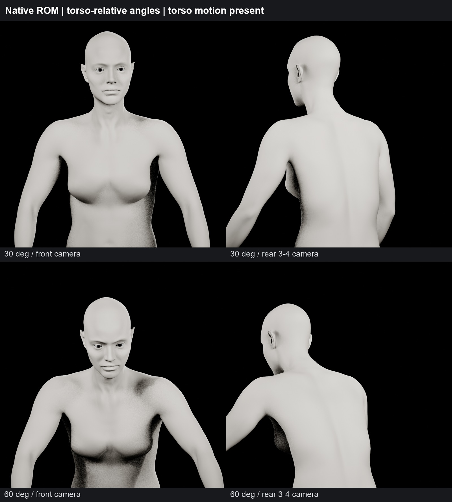
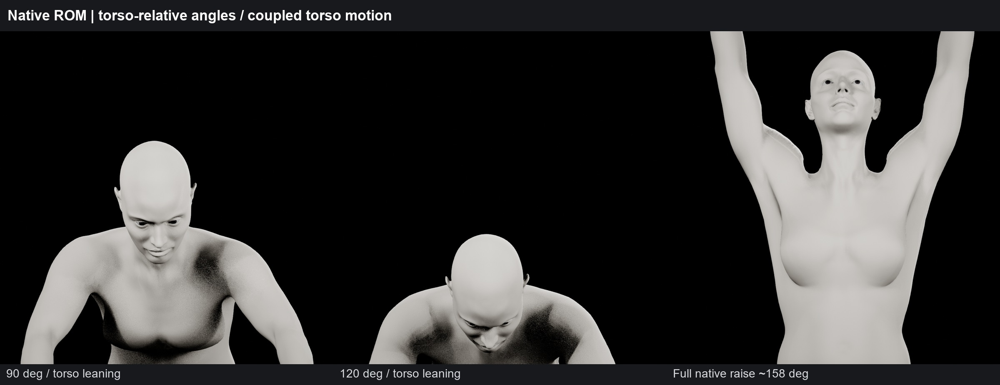
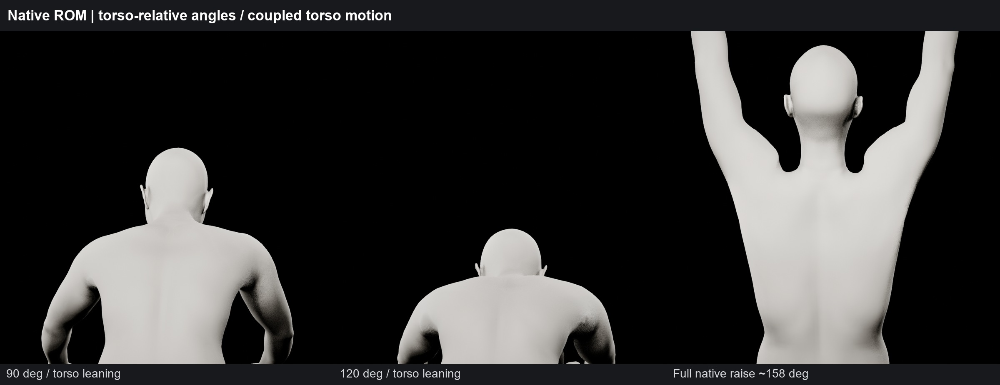
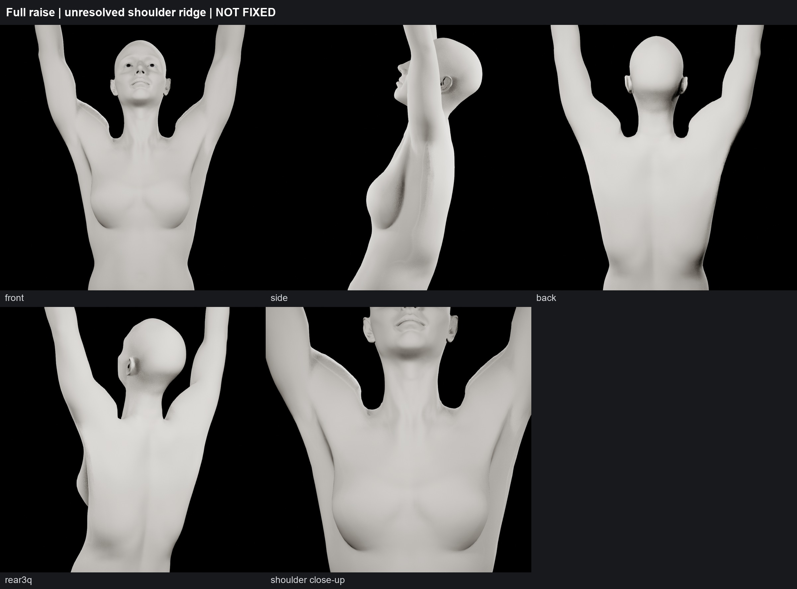
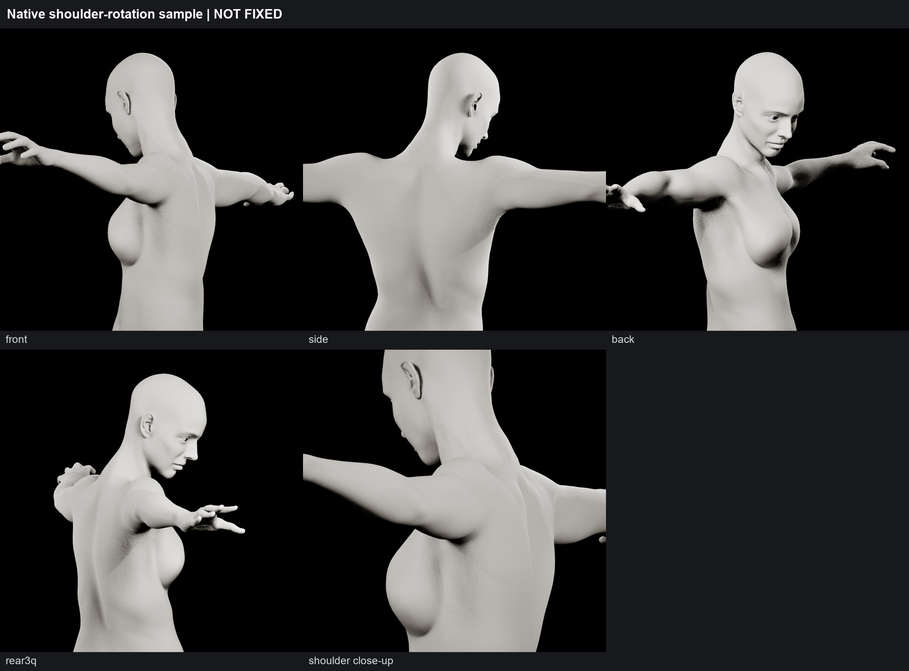
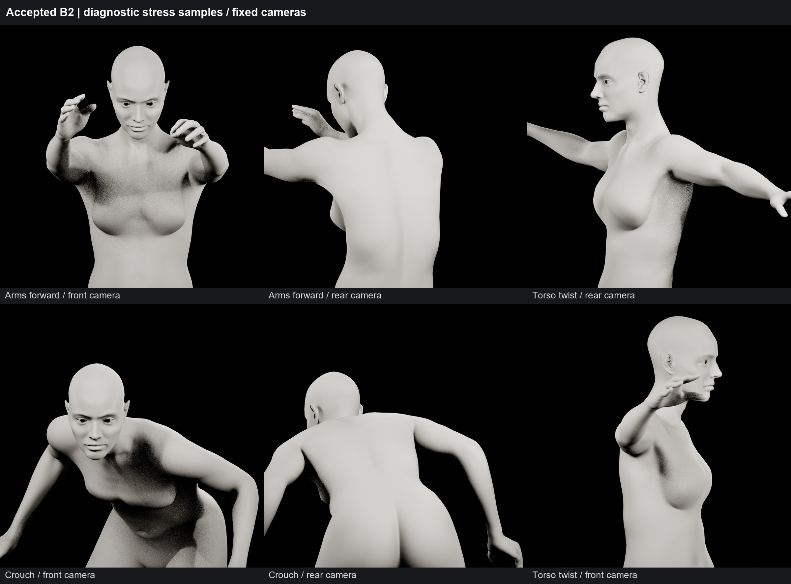
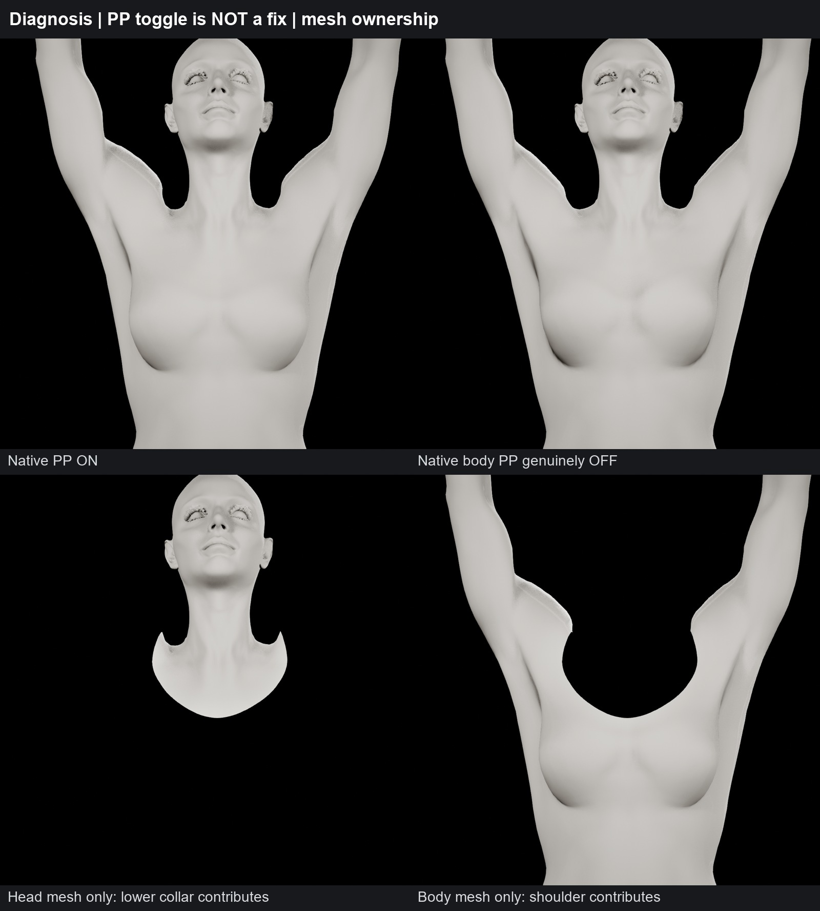
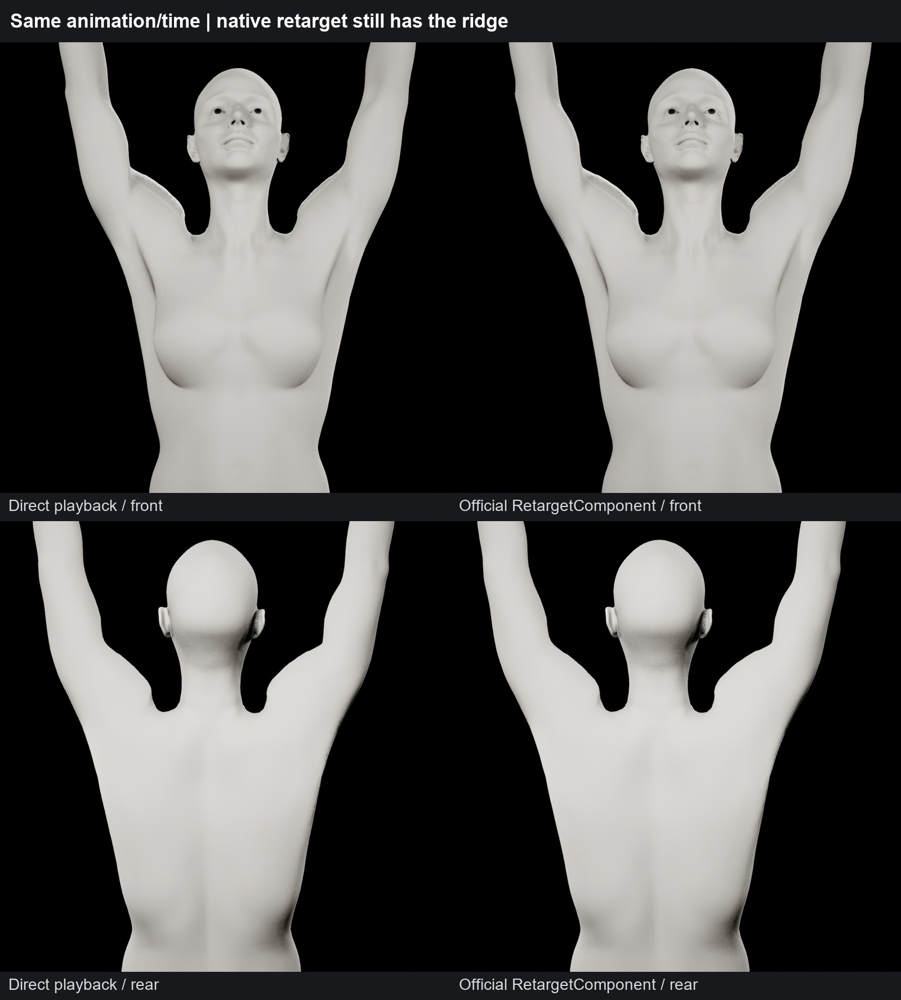
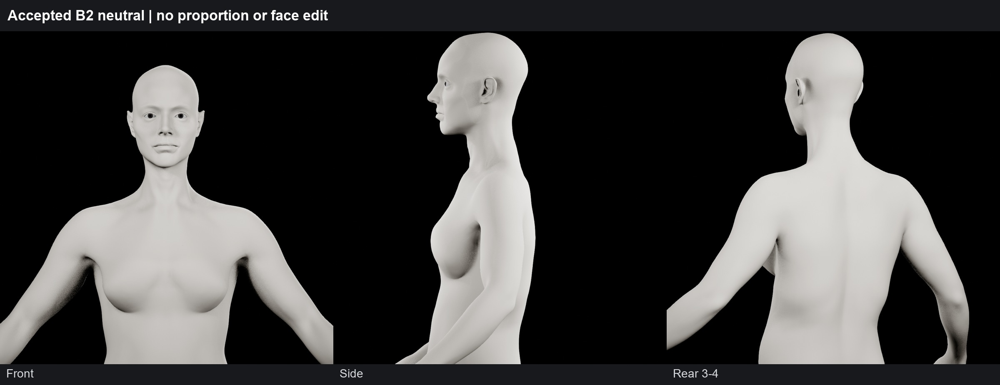

B2 omuz denetimi
Omuz sorunu çözülmedi. Kabul edilen B2 korundu.
Rapor · Resmî arayüz adımı
30° / 60° — gövde hareketiyle birlikte tanısal örnekler

90° / 120° / tam kaldırma — ön kamera

90° / 120° / tam kaldırma — arka kamera

Tam kaldırma — çözülmemiş sivri omuz

Shoulder rotation — sert trapezius geçişi

Arms forward / torso twist / crouch

PP ON/OFF ve head/body yüzey ayrımı

Direct / resmî native retarget karşılaştırması

Korunan nötr B2
